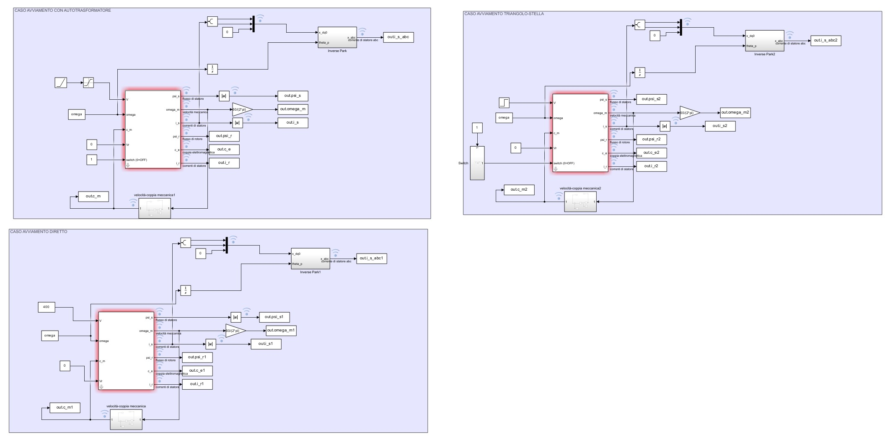
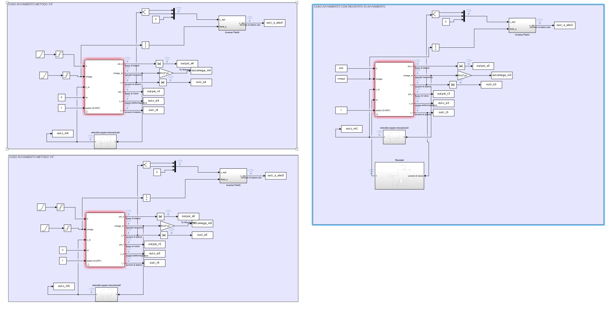
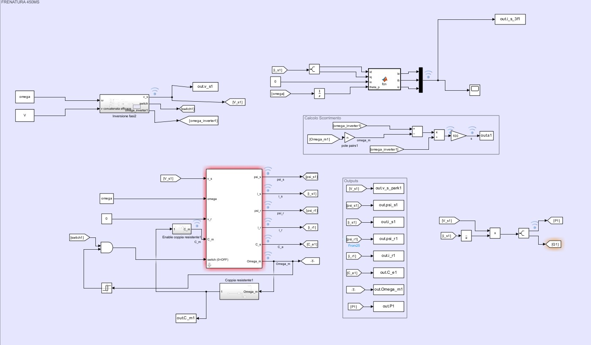

Development of dynamic models for synchronous and asynchronous machines. Conducted in-depth stability analysis and implemented control strategies, including V/f and Field Oriented Control (FOC). Leveraged Simulink to validate system response to transients and load variations, optimizing PID regulator parameters for enhanced performance. These are two examples of the models I've developed.
Comparative analysis of various starting techniques for asynchronous machines to evaluate current peaks and torque dynamics.


Modelling of a braking sequence for an asynchronous machine controlled by a power inverter.
